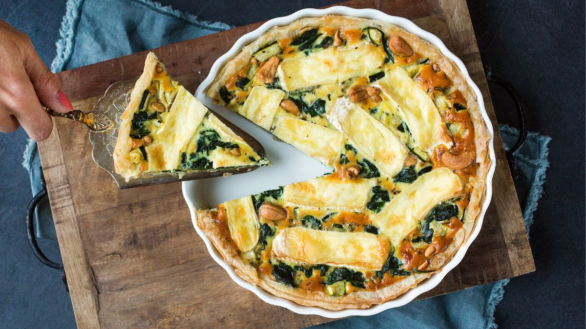

deze Quiche met spinazie en brie kan prima bij een avondmaaltijd, maar is ook een makkelijk gerecht voor een buffet.
1. Verwarm de oven voor op 200° graden.
2.Laat de vellen bladerdeeg ontdooien.
3. Verhit een beetje boter of olie in een pan en bak de spinazie tot deze gaat slinken.
4.Snijd de courgette klein en voeg toe aan de spinazie. Breng het groentemengsel op smaak met peper en zout.
5. Vet een quichevorm of ovenschaal in met een beetje boter.
6.Bekleed met de vellen bladerdeeg en maak de randen goed vast aan elkaar.
7.Laat het groentemengsel goed uitlekken en meng met de cashewnoten en doe dan in de quichevorm.
8.Klop de eieren los met de room, een snuf peper, zout en tijm. Giet dit over de quichevulling.
9.Snijd de brie in plakken en leg dit op de quiche.
10.Bak de quiche in ca. 35 tot 40 min gaar.
11.Serveer met een salade om er een volwaardige maaltijd van te maken. Ook lekker als bijgerecht bij een soep.
